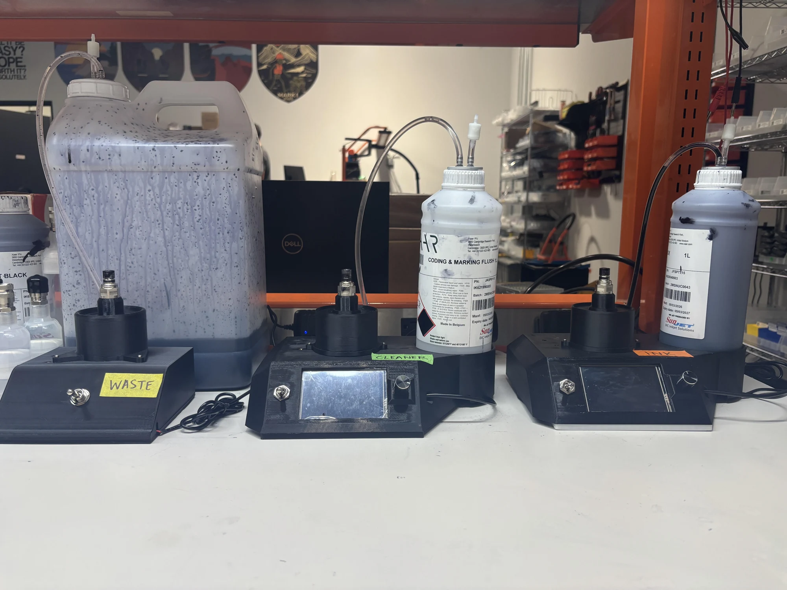
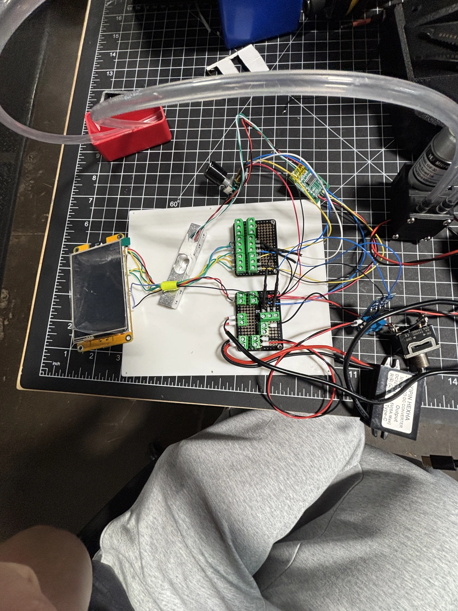
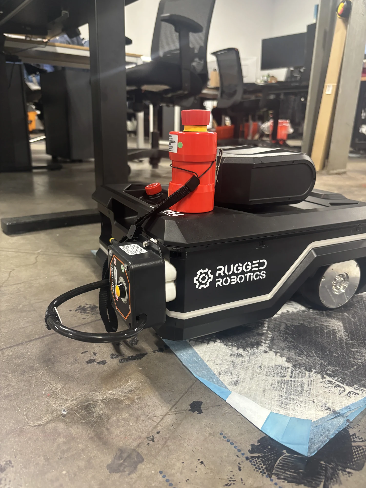

System architecture
Project overview
A mobile workstation for dispensing solvent-carrier ink, designed for use throughout the lab to support more efficient prototype work.
What I did
I defined the system architecture around a workstation that could be used wherever it was needed in the lab. I designed the station and integrated an ESP32 controller and load cell for dosing control and measurement, achieving ±2 mL dosing accuracy.


Component sizing and solvent compatibility
Fill time and motor selection
I used the target fill time to establish the required flow rate, then estimated the pressure needed to deliver that flow. The analysis used Darcy’s law to estimate pressure drop across the filter and tubing pressure-loss calculations to evaluate how tube length affected the pressure requirement. These flow and pressure requirements informed motor selection.
Sealing and solvent testing
I iterated manifold face seals using Parker’s O-Ring Handbook to isolate the solvent system from the environment. Solvent compatibility was a requirement across the entire system and was evaluated through a series of solvent-immersion test setups.


Test stands and manufacturing support
Other internship work
I modeled a 20-micron filter housing using surface modeling to seal the chassis against dust ingress. I also designed and manufactured 3D-printed and machined assembly jigs, supported by GD&T drawings, for robot-subsystem assembly and checkout.
Most test stands and manufacturing jigs are not shown because they involve proprietary assemblies.

